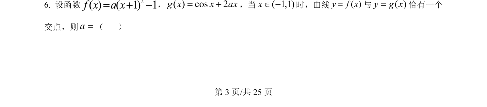
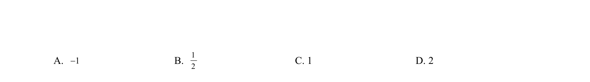
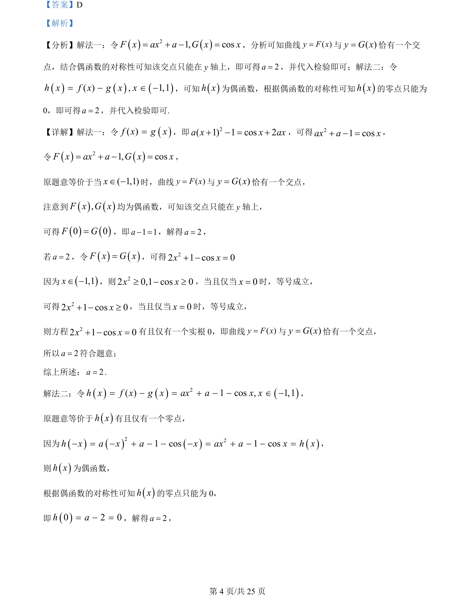
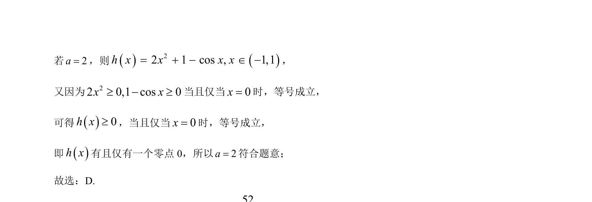

2024-新课标Ⅱ-06
吉林2024卷新课标Ⅱ不分题6题型选择难难
考点：函数 零点 参数取值范围 数形结合
题面


摘要
f(x)=a(x+1)²-1，g(x)=cosx+2ax，当x∈(-1,1)时曲线y=f(x)与y=g(x)恰有一个交点，求参数a的取值。
关联考点
答案与解析


📄 原 PDF 第 3 页：素材/真题/吉林/2008-2024·（吉林）数学高考真题/2024年高考数学试卷（新课标Ⅱ卷）（解析卷）.pdf